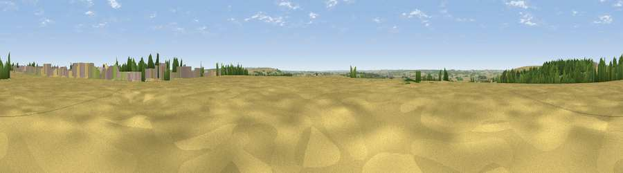

Viewpoint near Elsham
#31227 in England · top 59% of its area beats it · near ElshamThe view, rendered

A 360° render of this exact spot computed from the terrain model, tree cover and land cover — summer colours, afternoon light, calibrated against photographs of famous viewpoints. Real trees, hedges and buildings will differ in detail.
The panorama
Grey silhouette: terrain skyline in each direction (720 bearings, Earth curvature and refraction included). Dashed green: skyline with trees (+15 m) and buildings (+8 m) as obstacles. Blue strip: how far the ground is visible on each bearing.
Where the view opens
Wedge length = distance to the farthest visible ground on that bearing (vegetation-aware). Rings at 10, 25 and 50 km.
What fills the view
75% cropland · 12% woodland · 9% grassland · 4% built-up
Angular shares of the visible panorama (visual magnitude), not map area. Landscape diversity 0.36 (0–1 Shannon).
Key numbers
More beautiful places nearby
The staircase of upgrades: each row has a higher view potential than everything closer. Driving times are estimates from straight-line distance, calibrated against real road routing — check an actual route before setting out.
| Place | Direction | Drive | Score |
|---|---|---|---|
| Viewpoint near Barnetby le Wold | S · 2 km | ~5 min | 45.9 |
| Elsham Hill | NW · 2 km | ~5 min | 52.6 |
| Saxby Wold | NW · 7 km | ~14 min | 53.9 |
| Viewpoint near South Ferriby | NNW · 9 km | ~18 min | 54.8 |
| Viewpoint near South Ferriby | NNW · 9 km | ~19 min | 57.2 |
| Viewpoint near South Ferriby | NNW · 10 km | ~19 min | 58.1 |
| Fonaby Top | SE · 12 km | ~23 min | 60.7 |
| Viewpoint near Nettleton | SSE · 14 km | ~26 min | 64.7 |
53.59719, -0.42548 · source: osm peak · position refined by local search. Computed location — check access rights before visiting.